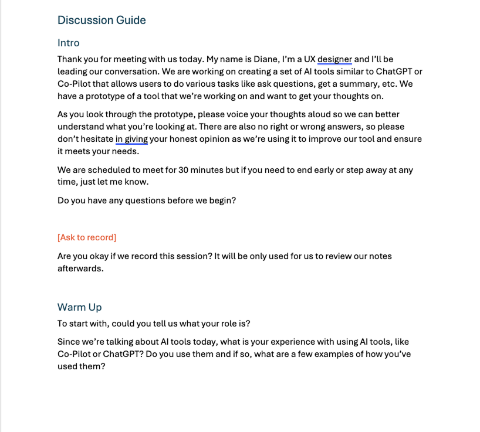
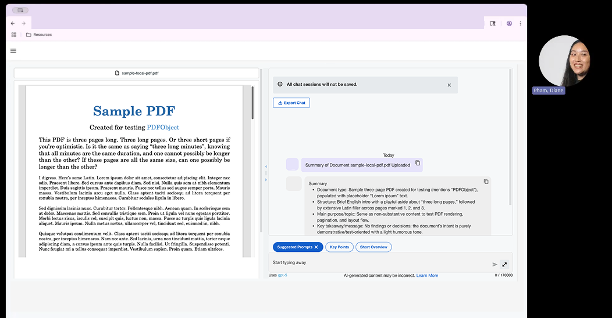

Understanding how employees expect to find and learn how to use an internal AI tool for summarizing documents.
Before launching an internal AI tool that summarizes and interacts with uploaded documents, the team wanted to understand how employees expected to find and use it. Because it lived alongside other similar, internal AI tools, there were questions around discoverability and feature comprehension.
My role was to gather user feedback around where users naturally look for AI tools, how they interpret these tools' purposes, and how easily they can complete key tasks such as uploading documents and navigating the interface.
We recruited 8 employees, most of whom had prior experience with AI tools like ChatGPT or Copilot. Their common use cases included editing writing, reviewing documents, searching for information, and planning tasks — giving us a strong baseline for evaluating expectations.
First, users were given a description of the tool and asked where they expect to find it and what they expected it to be called. Users were then given tasks using the tool (uploading documents, switching views, and resizing) and asked for their feedback.

Research script used during sessions.

Example usability test session with a participant.
Many participants couldn't infer what the tool did based on its name, leading them to misclassify it as storage, transcription, or general document help. This created early friction and uncertainty about where to upload documents.
While the waffle menu ultimately made sense, only half of users guessed it correctly. Because the menu shows different tools for different people, relying on it alone risks low visibility.
The landing page communicated security and simplicity, but several users wanted clearer explanations of what the tool does and how to get started.
All participants completed the upload flow easily and rated it highly. The mental model for "upload → get summary" aligned well with expectations once users understood the tool's purpose.
Most users overlooked the resizer bar and tried unrelated controls. Once found, the feature made sense, but its visual affordance was too subtle.
This study clarified how employees think about AI tools within the company's ecosystem and revealed key opportunities to improve discoverability, naming clarity, and first-time usability. The findings directly informed design updates ahead of launch and shaped the communication strategy for introducing the tool to the organization.